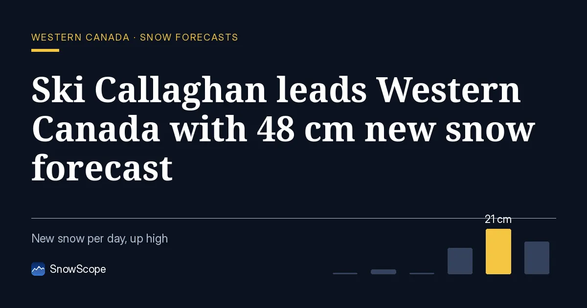
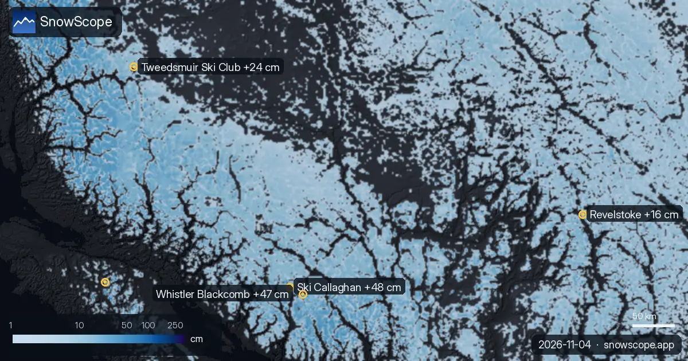
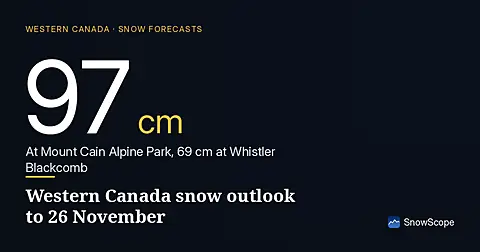

Ski Callaghan leads Western Canada with 48 cm new snow forecast
Ski Callaghan leads Western Canada resorts with 48 cm new snow forecast through 7 November, narrowly ahead of Whistler Blackcomb at 47 cm. The storm's main punch comes on 6 November, but height will determine whether you ski powder or wet snow.
See the live snow forecast for Ski Callaghan in the SnowScope appSnow depth, powder alerts and the 3D map, free.
Two resorts dominate the forecast
Ski Callaghan takes the lead with 48 cm of new snow modelled over the next three days. Whistler Blackcomb follows just 1 cm behind at 47 cm. This early season pattern is unusual—the region has been dry. Mount Cain Alpine Park comes third with 34 cm forecast, while Tweedsmuir Ski Club gets 24 cm and Revelstoke trails at 16 cm. The difference comes down to how the weather system tracks across the mountains. Where you are on 6 November makes all the difference.
| Resort | Snow depth | New snow, 72 h | Coming, next days | Top |
|---|---|---|---|---|
| Ski Callaghan | 19 cm | 2 cm | 48 cm | 998 m |
| Whistler Blackcomb | 60 cm | 1 cm | 47 cm | 2,259 m |
| Mount Cain Alpine Park | 69 cm | 5 cm | 34 cm | 1,616 m |
| Tweedsmuir Ski Club | 21 cm | 5 cm | 24 cm | 1,650 m |
| Revelstoke | 25 cm | 0 cm | 16 cm | 2,224 m |

6 November is the main event
The storm arrives in stages. On 5 November, Ski Callaghan sees 12 cm and Whistler 11 cm—light starters. The real action comes on 6 November: Ski Callaghan receives 21 cm, Mount Cain gets the same 21 cm, and Whistler picks up 16 cm. By 7 November, Whistler surges to 20 cm while Ski Callaghan falls to 15 cm. The pattern shows a system that delivers early snow to lower-elevation resorts like Ski Callaghan, then shifts to favour the higher terrain at Whistler as it evolves.
High terrain captures the cleaner snow
At Ski Callaghan (848–998 m), the terrain is low enough that rain becomes a risk. The freezing level on 6 November ranges 1,330–1,460 m—this straddles the summit. The top of the mountain sits in snow, but lower elevations will mix rain and snow. By 7 November, rain is forecast at Ski Callaghan, and the freezing level climbs to 2,130 m. Whistler Blackcomb, with its summit at 2,259 m, stays well above these freezing levels: on 6 November, the freezing level ranges 1,360–2,270 m. That means high terrain stays dry and cold. Mount Cain Alpine Park (1,190–1,616 m) sits in the middle ground—the summit sees snow, but the base gets rain. This is the November pattern across Western Canada: the summits always win, the passes always mix.
Watch the freezing level—it determines rain versus snow
The freezing level is the key to this forecast. At Ski Callaghan, the freezing level on 6 November drops to 1,330 m at the low and rises to 1,460 m—this swing means the summit stays frozen while the base warms. By 7 November, the freezing level climbs to 2,130 m, above the summit, so the base gets rain. Tweedsmuir Ski Club (1,588–1,650 m) faces a different fate: on 7 November, the freezing level collapses to 450 m at the low. Almost all terrain gets wet that day. Whistler, with more height to spare, keeps its summit in the dry snow zone even as the lower valleys get rain. The implication is clear: 5–6 November is the window for clean, dry powder. After 7 November, expect slush at mid-elevations and rain lower down.
Overall snow cover is tightening
Across Western Canada, 316,180 km² is snow-covered now, down from 356,250 km² two days ago. The forecast model shows this shrinking to 315,550 km² by 7 November, and the number of resorts with measurable snow will fall from 53 to 50. The incoming precipitation is therefore important. Ski Callaghan's upper slopes sit at 19 cm—reasonable for early November—but the region overall is running lean. Even 48 cm of new snow will help establish base depths. The pattern suggests a dry start to the season in Western Canada, with this week's system being the first real push.
Best window: 5–6 November
If you're planning to ski this system, go on 5 or 6 November—that is when the precipitation is active and the freezing levels are lowest. By 7 November, rain enters the low valleys and the snow line starts climbing again. The ski that counts is high terrain: Whistler Blackcomb's upper reaches will get the deepest powder, while Ski Callaghan's summit will see snow but mid-elevations will face slush. For early November in Western Canada, that is how the forecast is shaping up.
Tips for skiers
- Go high: upper slopes and summits get the deepest, cleanest snow. Ski Callaghan's top (998 m) is marginal; Whistler's high terrain (2,259 m) will be the prize.
- Go on 5–6 November: after 7 November, rain moves into low valleys and the freezing level climbs, mixing wet snow with powder at mid-elevations.
- Watch the freezing level for avalanche risk. On 6 November at Ski Callaghan, it ranges 1,330–1,460 m: wet-snow zones exist where rain mixes with new snow. Check the official avalanche bulletin for your terrain.
- Mount Cain Alpine Park and Whistler will perform best. Ski Callaghan offers turns, but expect mixed conditions mid-mountain and rain lower.
- Expect rain at Ski Callaghan base by 7 November; rain at all lower elevations by that date. Plan accordingly if you're chasing dry snow.
About these numbers
Resort snow depths are the deepest snow on the resort's upper slopes from the SnowScope snow model (about 1 km, run of 4 November); they are estimates for an area, not a measurement at one point. Station values are measurements on the date shown. Forecasts can change. Always read the official avalanche bulletin before going off-piste.
Official avalanche bulletins: Avalanche Canada
Cite this report
For research, teaching or the press: the numbers and charts are free to reuse under CC BY 4.0 with this citation.
SnowScope (2026), Ski Callaghan leads Western Canada with 48 cm new snow forecast, https://snowscope.app/blog/en/2026/11/western-canada-snow-forecast-4-november-2026.html, accessed 2026-11-04
SnowScope (Atlas Labs). (2026, November 4). Ski Callaghan leads Western Canada with 48 cm new snow forecast. SnowScope snow reports. https://snowscope.app/blog/en/2026/11/western-canada-snow-forecast-4-november-2026.html
BibTeX
@misc{snowscope2026westerncanadasnowforecas,
author = {{SnowScope (Atlas Labs)}},
title = {Ski Callaghan leads Western Canada with 48 cm new snow forecast},
year = {2026},
month = nov,
howpublished = {\url{https://snowscope.app/blog/en/2026/11/western-canada-snow-forecast-4-november-2026.html}},
note = {Published 2026-11-04 14:49 UTC; accessed 2026-11-04}
}· CC BY 4.0 · Methods, data and tools →
Ski Callaghan: snow and temperature by height, this winter vs last (tools) →
Follow Ski Callaghan
Free: a message when fresh snow is coming, and the forecast every morning.
More snow reports

Whistler Blackcomb saw 76 cm of new snow in the last 72 hours, with Mount Cain Alpine Park also receiving 64 cm, as of November 16, 2026.

Whistler Blackcomb for every level, with our snow history: about 370 cm at the usual peak at mid-mountain over 46 past winters, March and April the deepest months.

Western Canada mountains carry 42% of their normal snow for mid-November as of 12 November, but 142 cm is forecast over the next two weeks.